«Siguiendo la verdad en amor, crezcamos en todo en aquel que es la cabeza: Cristo.»Efesios 4:15 · RVR60
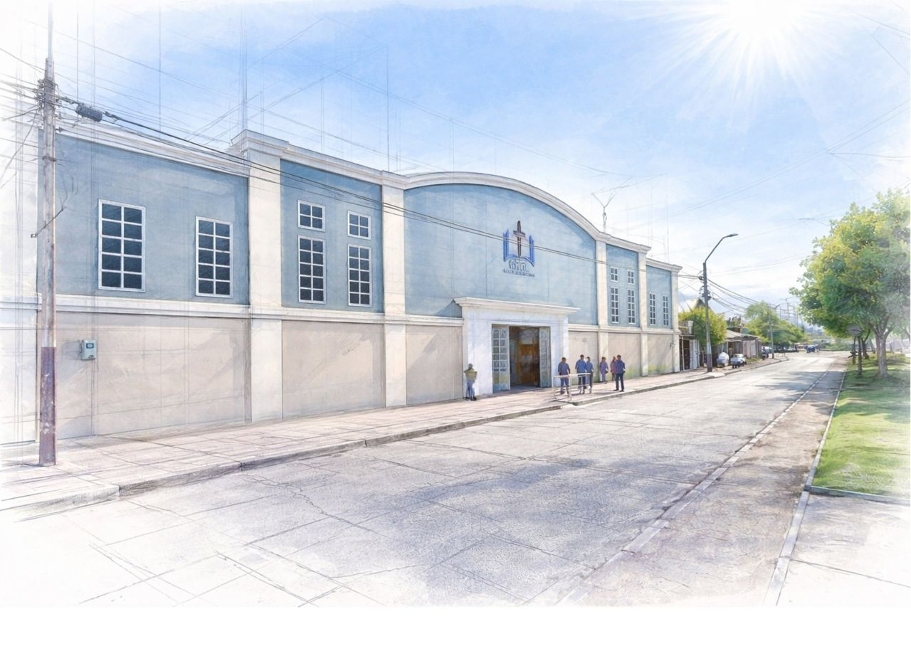
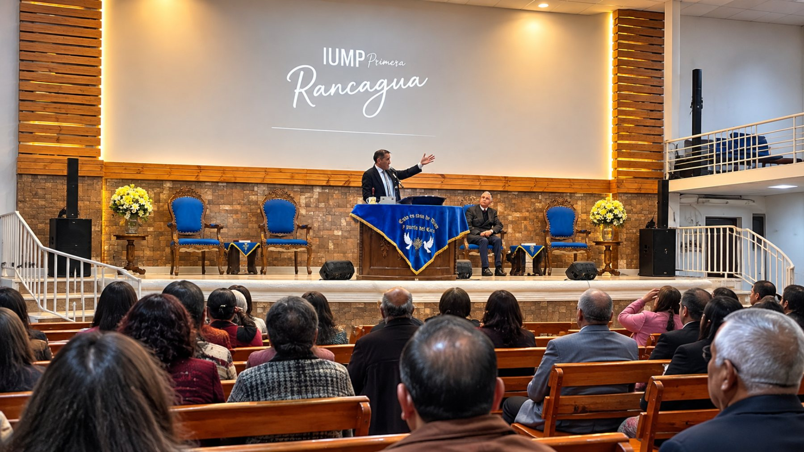
Cada semana es una nueva oportunidad para crecer, avanzar y servir al Señor. No necesitas invitación para llegar.
Reuniones de toda la congregación para cantar, orar y alimentarnos de la Escritura.
El servicio central de la semana: adoración, gratitud y predicación de la Palabra.
Además, durante la semana las hermanas Dorcas, los Varones y los Jóvenes tienen también su espacio. Para más información, .
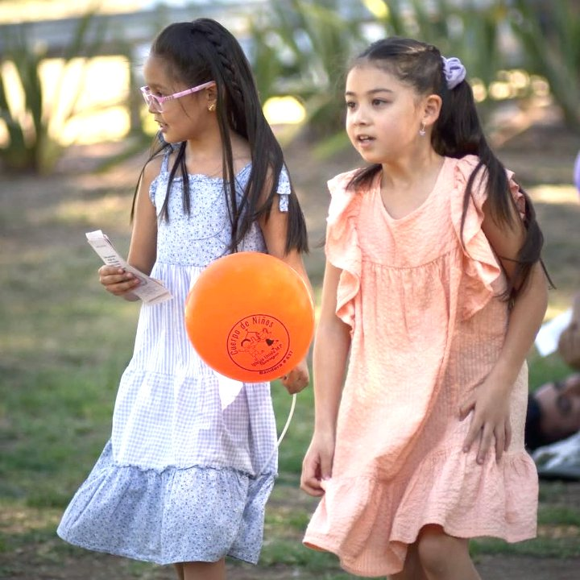
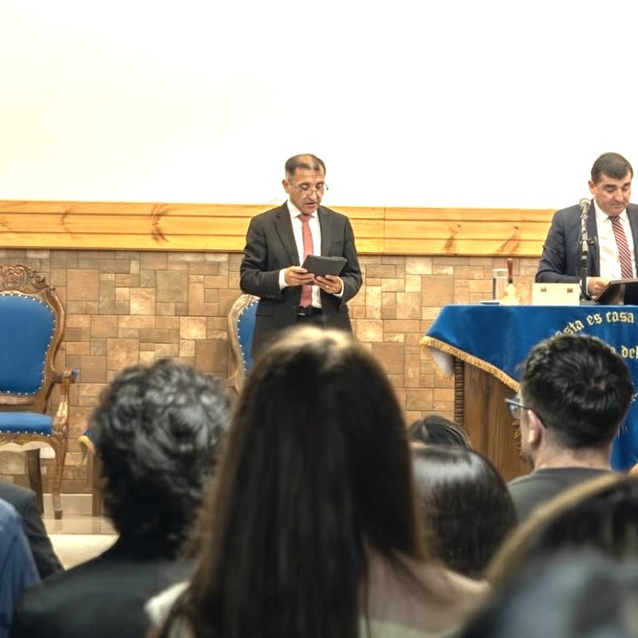
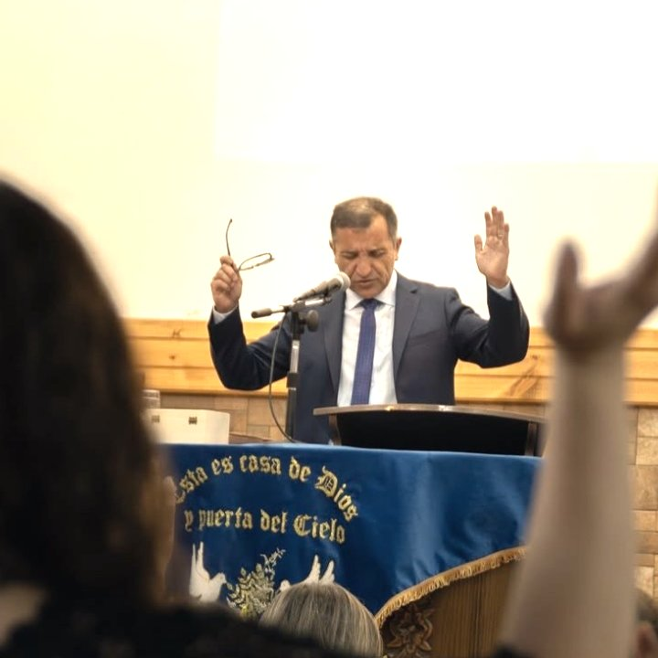
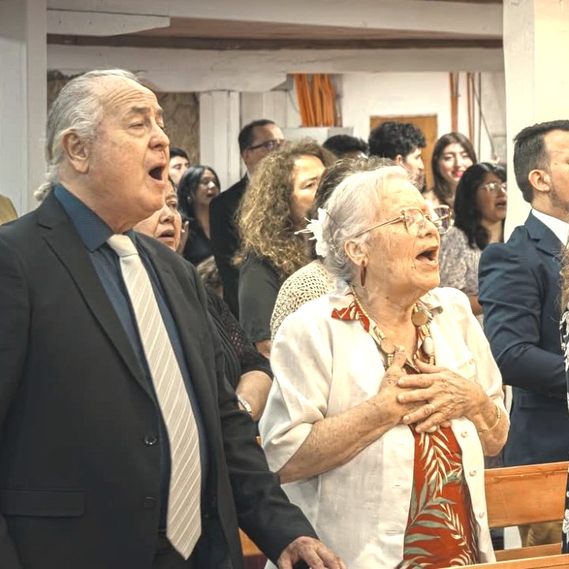
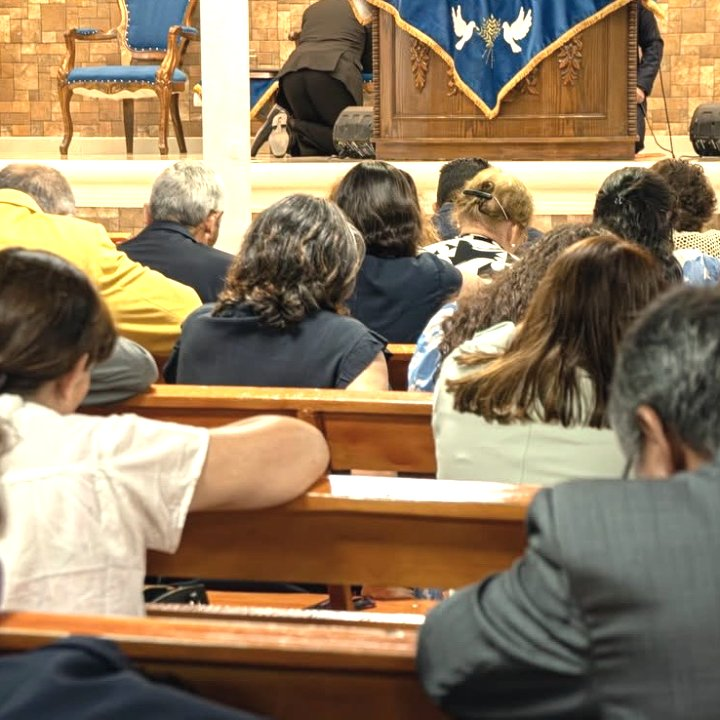
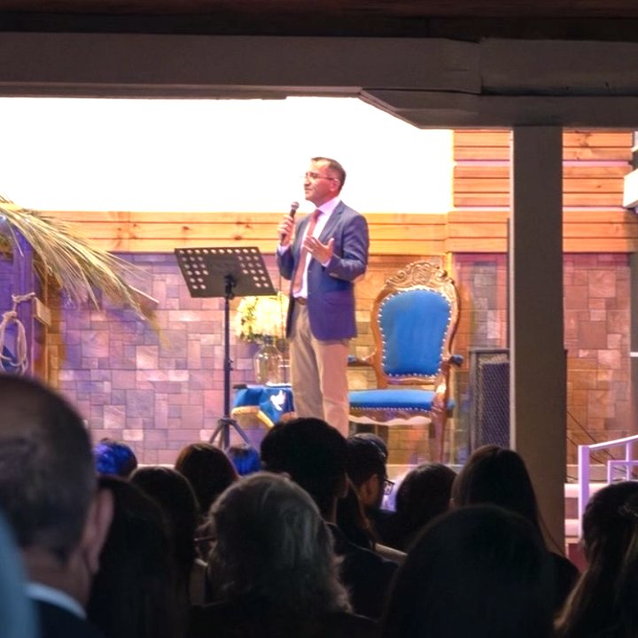
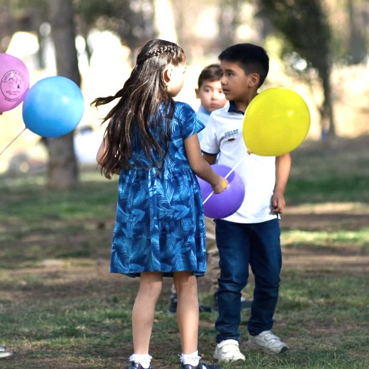
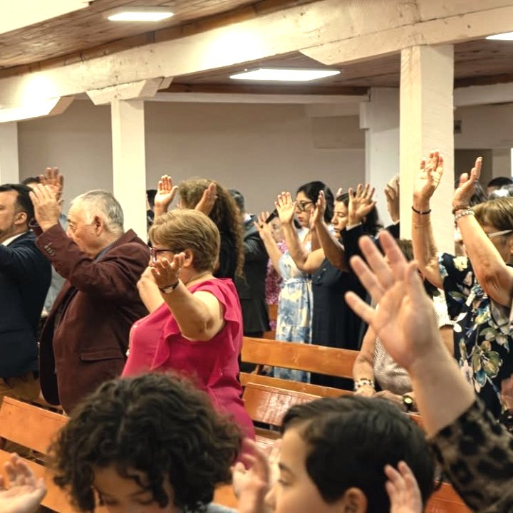
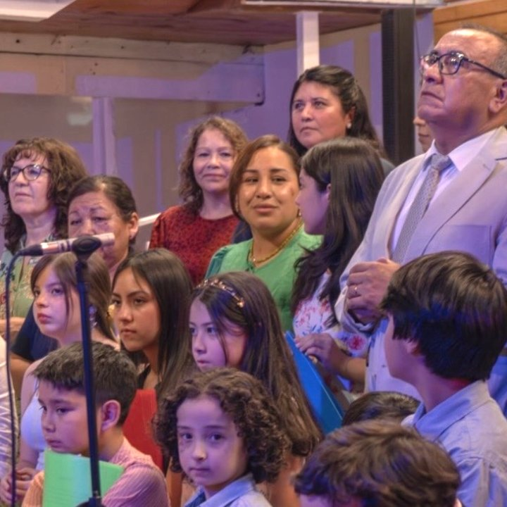
Cada domingo, nuestra congregación se reúne para participar de la Escuela Dominical, un valioso espacio de enseñanza bíblica y crecimiento espiritual. Para brindar una atención más cercana y efectiva, los alumnos se distribuyen en diferentes clases según su edad y etapa de vida. En cada grupo, la Palabra de Dios es enseñada de manera clara y práctica, con el propósito de fortalecer la fe, formar discípulos y ayudar a cada persona a caminar más cerca del Señor.
«Antes bien, creced en la gracia y el conocimiento de nuestro Señor y Salvador Jesucristo» — 2 Pedro 3:18
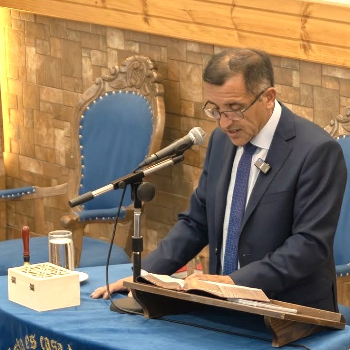
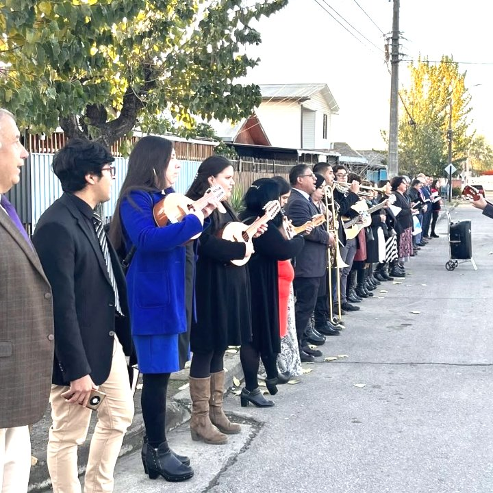
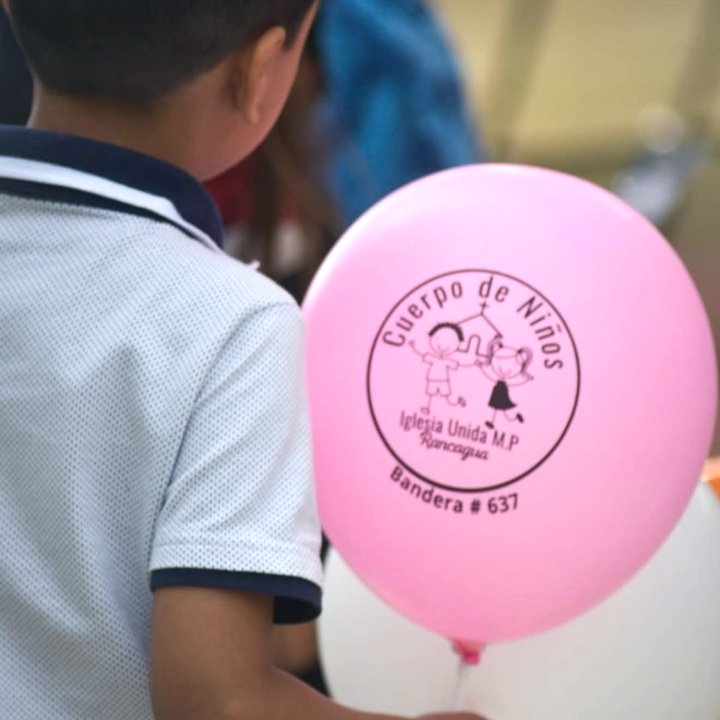
Momentos de nuestra Escuela Dominical
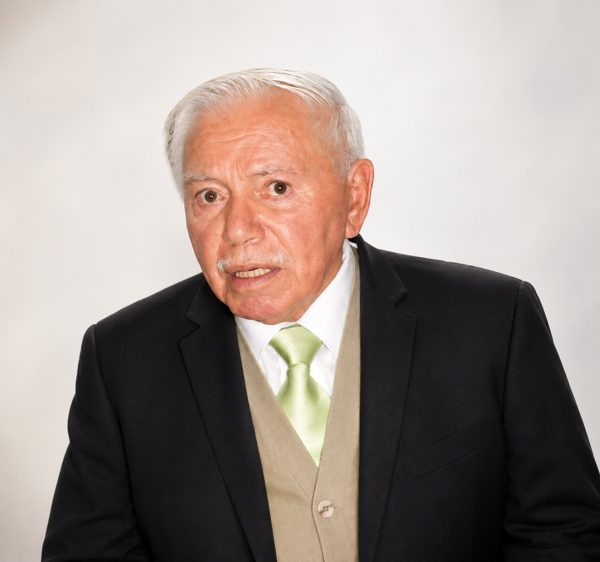
La Primera Iglesia Unida Metodista Pentecostal de Rancagua nació en marzo de 1966, en tiempos de sencillez y grandes desafíos. Guiados por una profunda convicción, el pastor Rafael Toloza junto a su familia, llegaron desde Santiago para sembrar el Evangelio con sacrificio, oración y una perseverancia inquebrantable. Aunque los recursos materiales eran escasos, la fe fue el motor que permitió avanzar y edificar sobre roca firme.
Con el paso de las décadas, aquella semilla inicial echó raíces profundas, transformándose en una comunidad con identidad propia y un refugio de esperanza. A través de nuestra historia, la iglesia ha sido testigo del rescate de innumerables familias, quienes han hallado en Cristo el inicio de una vida nueva.
Hoy, tras más de cinco décadas de trayectoria, permanecemos en pie como un testimonio vivo de la fidelidad del Señor. Aunque el pastor Rafael Toloza ha sido llamado a su descanso eterno, la obra que Dios consolidó a través de su servicio continúa firme y vigente.
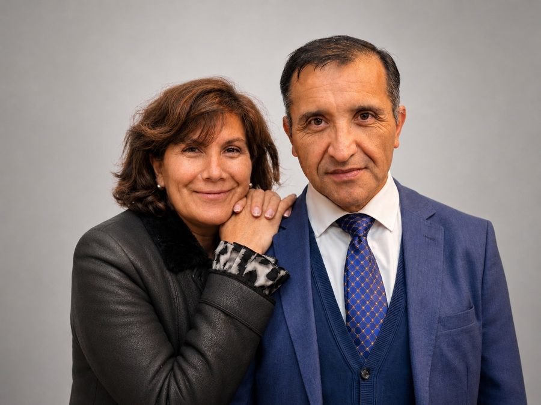
Llamados al ministerio pastoral en el año 2003, nuestros pastores Alex y María Cristina iniciaron su servicio en el extremo sur de Chile, en la ciudad de Punta Arenas. Desde mayo de 2019 pastorean esta congregación, dedicando sus esfuerzos a alcanzar, acompañar, enseñar y fortalecer en la fe a cada persona que el Señor añade a Su iglesia. Entienden la iglesia como una familia extendida, donde la adoración a Dios y el servicio cristiano encuentran su expresión más hermosa en el amor fraternal. Un amor sincero que se aprende, se practica y se perfecciona día a día mientras caminamos juntos tras los pasos de Cristo.
Creemos en una fe que se vive en comunidad: adorando juntos, aprendiendo de la Palabra, orando unos por otros y sirviendo con sencillez a quienes el Señor nos permite alcanzar.
Hay un solo Dios, vivo y verdadero, eterno, de infinito poder, sabiduría y bondad. En la unidad de la Divinidad hay tres personas: el Padre, el Hijo y el Espíritu Santo.
El Hijo, Verbo del Padre, tomó la naturaleza humana, padeció, fue crucificado, muerto, y al tercer día resucitó para reconciliarnos con su Padre.
Procede del Padre y del Hijo, verdadero y eterno Dios, que bautiza y obra con poder en los creyentes, sellándolos para el día de la redención.
La Santa Biblia contiene todas las cosas necesarias para la salvación. Nada debe exigirse como artículo de fe que en ellas no se lea ni pueda por ellas probarse.
Practicamos la Santa Cena del Señor y el Bautismo, administrado por aspersión a infantes y adultos, en el nombre del Padre, del Hijo y del Espíritu Santo.
«Y perseveraban en la doctrina de los apóstoles, en la comunión unos con otros, en el partimiento del pan y en las oraciones.» Hechos 2:42 · RVR60
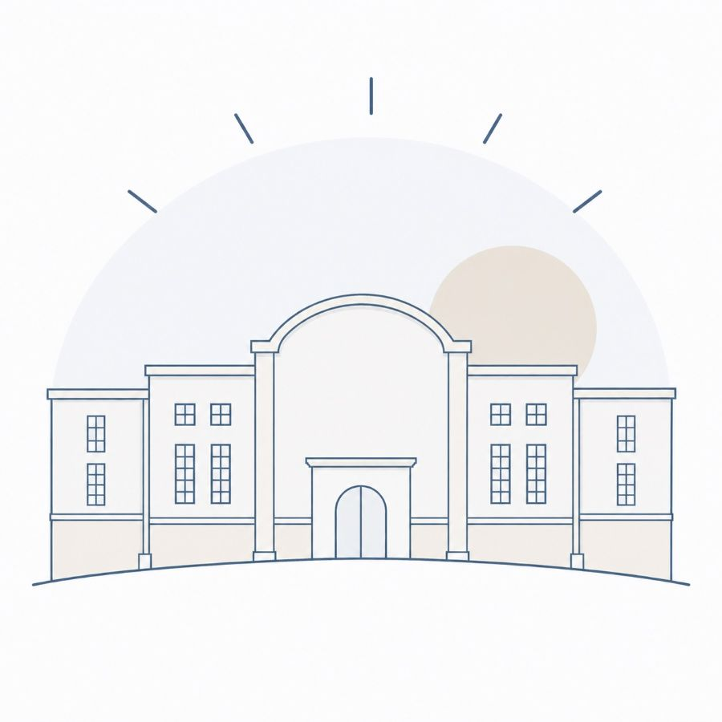
Una sola iglesia,
muchos ministerios,
un mismo propósito:
glorificar a Dios, edificar vidas y llevar a otros a Cristo.
Si estás buscando una iglesia, si quieres volver al Señor, o si simplemente tienes preguntas — escríbenos. Será un gozo recibirte.
Completa el formulario y te responderemos a la brevedad.
¡Gracias! Recibimos tu mensaje.
Te responderemos muy pronto.